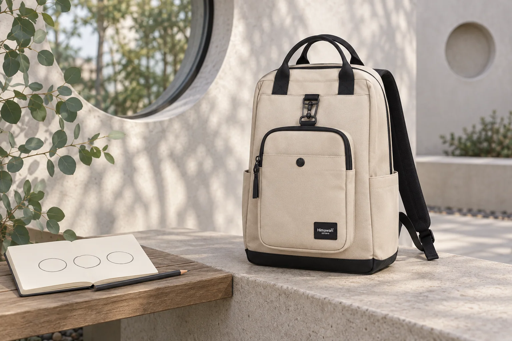

익숙한 길에서 같은 모양이 쓰인 다른 자리 찾기

늘 걷는 길에서는 목적지와 가게 이름을 먼저 읽게 됩니다. 같은 경로를 조금 다르게 보고 싶다면 모양 하나를 정해보는 방법이 있습니다. 둥근 형태를 골랐다면 창과 화분, 간판의 테두리에서 비슷한 모습을 찾는 산책입니다. 걸을 거리를 더 늘리거나 새로운 동네로 갈 필요 없이 평소의 길에서 비교할 대상을 바꾸어볼 수 있습니다.
처음에는 스스로 알아보기 쉬운 형태를 고릅니다. 원이나 삼각형처럼 이름 붙일 수 있어도 좋고, 둥글게 꺾이는 모서리처럼 느슨한 기준이어도 됩니다. 오늘 무엇을 같은 모양으로 볼지 자신이 이해하고 있으면 충분합니다. 색과 재료까지 모두 맞추려 하면 후보가 지나치게 좁아질 수 있으므로 첫 산책에서는 한 가지 기준만 두어봅니다.
같은 모양이 맡은 다른 자리
둥근 창과 둥근 화분을 보았다고 해봅시다. 둘 다 원형으로 느껴져도 하나는 벽에 있고 하나는 바닥 위에 놓여 있습니다. 크기의 차이뿐 아니라 바라보는 높이와 주변 물건과의 관계가 다릅니다. 어느 쪽이 더 예쁜지 고르는 대신 같은 형태가 어디에 놓였는지 비교하면 기록할 말이 구체적으로 생깁니다.
형태가 어느 방향을 향하는지도 볼 수 있습니다. 정면에서 둥글게 보이는 면과 비스듬히 놓여 길게 느껴지는 면이 다르게 보일 수 있습니다. 어디서 보았는지 간단히 기억해두면 나중에 같은 물건을 봤을 때 인상이 달라진 이유를 생각할 수 있습니다. 특별한 광학 용어나 측정 도구를 써야 하는 관찰은 아닙니다.
주변에서 그 모양이 반복되는지도 살펴봅니다. 하나의 창만 둥근지 여러 창이 나란히 같은 모양인지, 화분의 가장자리와 받침에서도 비슷한 선이 보이는지처럼 눈으로 확인합니다. 만든 사람의 의도나 건물의 역사를 형태만으로 짐작해 사실처럼 적지 않습니다. 지금 볼 수 있는 배열과 방향을 기록하는 범위 안에서도 비교할 내용은 생깁니다.
평소에는 눈에 들지 않던 모양을 찾았더라도 가까이 다가가 확인해야 할 의무는 없습니다. 도로의 반대편이나 출입이 제한된 곳에 있는 대상을 관찰하려고 길을 바꾸는 대신 보이는 만큼만 남길 수 있습니다. 통행 중에는 주변을 살피고, 기록하려면 멈출 수 있는 자리를 찾습니다. 보지 못한 뒷면이나 내부는 관찰한 내용에 넣지 않습니다.
같은 형태를 세 번 찾아보는 규칙을 정해볼 수 있지만 개수를 채우는 일이 산책의 목적을 앞설 필요는 없습니다. 두 장면만 보았어도 차이가 분명하면 이야기가 남습니다. 반대로 비슷한 물건을 많이 찾았다면 그중 놓인 자리가 가장 달랐던 둘을 골라볼 수 있습니다. 많이 모으는 것과 자세히 비교하는 것을 같은 성과로 생각하지 않습니다.
이 글에 함께 소개하는 Himawari No.0403 제품 정보는 평소 산책의 가방을 살펴볼 자료입니다. 관찰 주제를 하나 정했다고 새로운 도구를 많이 챙길 필요는 없습니다. 노트를 쓸지 휴대전화에 짧게 적을지 정한 뒤 필요한 소지품만 준비하면 됩니다. 가방을 열어 꺼낼 물건보다 길에서 잠시 멈출 자리를 먼저 살펴보는 날이 될 수도 있습니다.
기록이 길을 방해하지 않는 정도
기록은 간단한 선이나 짧은 말로 남길 수 있습니다. 그림을 완성하려고 오래 서 있기보다 형태와 위치가 떠오를 정도로 적어봅니다. '높은 벽의 둥근 창'과 '바닥에 모인 둥근 화분'처럼 이름을 붙일 수 있습니다. 같은 대상을 다시 찾을 필요가 없다면 자세한 주소보다 그날 비교한 차이가 기록의 중심이 됩니다.
사진을 찍고 싶다면 현장의 촬영과 출입 안내를 확인하고 다른 사람의 이동을 막지 않는 곳에서 멈춥니다. 집 안이나 사람의 얼굴을 함께 담지 않고 형태만 남길 수 있는지도 살펴보세요. 사진을 찍을 자리가 마땅하지 않으면 기억으로 한 줄을 적거나 그 대상을 지나갈 수 있습니다. 기록하지 않은 장면도 비교한 경험으로 남길 수 있습니다.
휴대전화에 모두 담아두면 돌아와 사진을 다시 고르는 일이 필요합니다. 그날의 모양과 관계없는 사진까지 함께 보이면 관찰한 대상이 흐려질 수 있으므로 선택한 장면만 짧은 메모와 모아두는 방법도 있습니다. 아직 보지 않은 차이를 새로 발견하면 산책 기록과 사진에서 본 것을 구분해 적습니다. 사진 밖 상황을 기억으로 덧붙였을 때도 그 사실을 알 수 있게 남깁니다.
돌아온 뒤에는 형태는 같고 쓰인 자리는 달랐던 둘을 골라봅니다. 모양, 높이, 주변 물건 중 한 차이를 말해보세요. 예를 들어 같은 둥근 형태라도 하나는 벽의 빈 면을 둘러싸고 다른 하나는 식물 둘레를 감싸고 있다는 식으로 관찰을 남길 수 있습니다. 관찰하지 않은 재료나 제작 방식을 더해 설명할 필요는 없습니다.
다음 산책에서 같은 주제를 이어가면 익숙한 대상의 다른 면이 보일 수 있습니다. 전날에는 원만 보았는데 이번에는 나란히 놓인 간격을 볼 수도 있습니다. 주제를 바꾸어 삼각형이나 반복되는 줄을 찾는 날로 정해도 됩니다. 계속 같은 기준을 유지해야 한다는 규칙보다 이번에 보고 싶은 대상을 하나 고르는 방식으로 이어갑니다.
누군가와 함께 걸었다면 같은 모양으로 본 것이 서로 달랐는지도 물어볼 수 있습니다. 한 사람은 화분의 테두리를 보고 다른 사람은 손잡이를 보았을 수 있습니다. 같은 대상을 설명하면서도 관찰 위치가 다르다는 것을 알게 됩니다. 상대가 찾은 것을 자신의 기록에 넣고 싶다면 무엇을 누가 보았는지 구분해 남기는 편이 기억을 정리하기 좋습니다.
짧은 산책의 기록은 물건 이름 몇 개로 끝날 수도 있습니다. 그중 다시 보고 싶은 둘을 표시해두면 다음번 길에서 잠깐 비교할 자리가 생깁니다. 둥근 창 아래에서 올려다본 방향과 화분을 옆에서 본 방향을 기억해두세요. 두 형태가 놓인 위치와 주변의 차이를 떠올릴 수 있다면 오늘 정한 관찰 주제는 충분히 남아 있습니다.